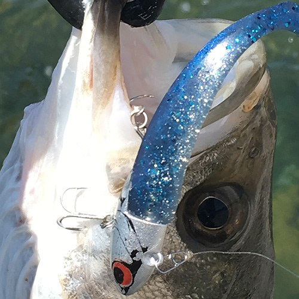
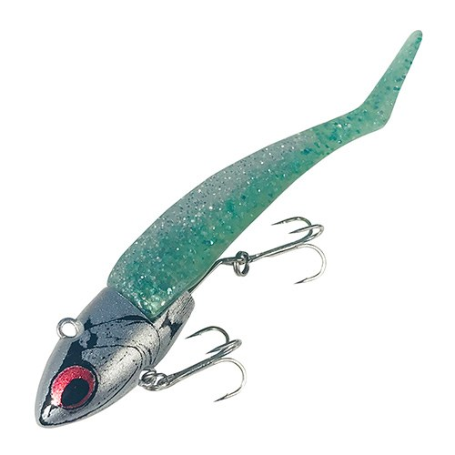
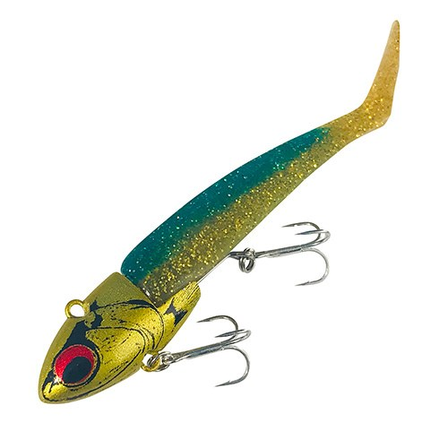
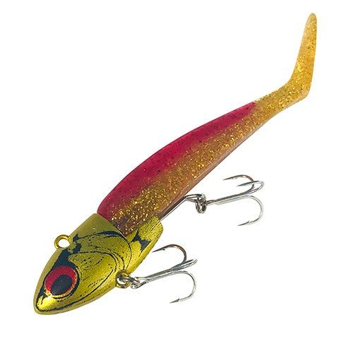
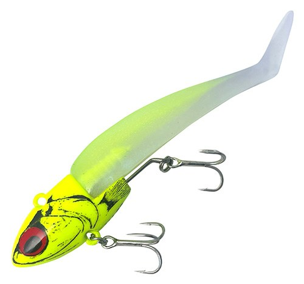
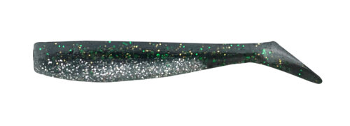

VJ-28
（VJ-28 VIBRATIONJIGHEAD）
VJ-28は、コアマンのバイブレーションジグヘッド「VJ」シリーズで一番重い28gのモデルです。
ジグヘッドとワームの組み合わせで、ボディ全体が細かく揺れる「バイブレーションするジグヘッド」。VJシリーズで最長の飛距離と、最深のレンジキープが最大の特徴で、水深5mより下の中層〜ボトムを得意とします。

画像出典:コアマン公式HP
スペック
- メーカー
- コアマン（COREMAN）
- タイプ
- バイブレーションジグヘッド（ジグヘッド＋ワーム）
- 全長
- 113mm
- 重さ
- ヘッド28g・ワーム4g
- フック
- がまかつ トレブル13 #8
- リング
- コアマン オリジナル #2
- ワーム
- コアマン アルカリシャッド 90mm
- カラー
- 全16色（ほかにパワーショップ限定カラー）
- ターゲット
- シーバス
- 価格
- 1,500円（税別）
▼今すぐチェック

VJ-28の特徴
VJシリーズ最大ウエイトで、遠く・深くを攻める
-
ワームがバイブレーションする新しいアクション
ジグヘッドの設計と、組み合わせるコアマンのワームとのマッチングで、ボディ全体が細かく揺れる。ワームまで振動して、シーバスを強く誘う。
-
28gで最長の飛距離・最深のレンジキープ
VJシリーズで一番重く、一番遠くまで飛ばせて、深いレンジを長くキープできる。水深5mより下の中層〜ボトムが得意。
-
吸い込まれやすくバラシが少ない
シーバスに吸い込まれやすく、口の中に掛かることが多いので、バラシが大幅に減る。
VJ-28の使い方
キャストしたら底まで沈め、底を取ったらすぐに巻きはじめて、一定のスピードで中層〜ボトムを通すのが基本です。巻きはじめの位置を変えながら、シーバスのいるレンジを探りましょう。
泳ぎが傾く時は、ワームを刺し直してバランスを調整します。根掛かりが多い場所では、着底したらすぐに巻くのがコツです。

画像出典:コアマン公式HP
VJ-28の得意な状況
水深のある沖堤防や港湾、潮の速い場所、風が強い日など、軽いルアーでは底が取れない・届かない場面で出番です。
デイゲームで沈んでいるシーバスの目の前まで、遠くから確実に届けられるのが強み。VJ-16では浮き上がってしまう深さを攻めたい時に持ち替えましょう。深い場所に沈んだシーバスにも届くので、デイゲームで釣れるチャンスを増やせます。
ワンポイント
深い場所では、着底までのカウントを覚えておき、次のキャストでは数カウント手前から巻きはじめると、根掛かりを減らしながらボトム付近を長く引けます。
VJ-16とVJ-28の使い分け
| モデル | 全長／ |
こんな |
|---|---|---|
| VJ-16 | 95mm／ |
水深3 |
| VJ-28 | 113mm／ |
水深5 |
スペックはコアマン公式HPの記載より。大型のシーバスや青物も混じる場所では、強化フックの「VJ-16 パワーフック」もあります。
人気カラー
VJ-28の人気カラーを紹介します。

シルバーヘッド／沖堤イワシ沖堤防のイワシを意識したカラー。デイゲームの1本目に。

ゴールドヘッド／イワシゴールドゴールドのフラッシングで、少し濁った時にも見せやすい。

ゴールドヘッド／アカキン濁りや朝夕の暗い時間に目立つ定番カラー。

チャートヘッド／チャートパール濁りが強い時や、深場でのアピールに。
※全16色。
画像出典:コアマン公式HP
パワーショップ限定カラー
コアマンの「パワーショップ」（公式サイトのPower Shop Listに載っている販売店）向けに、限定カラーのVJ-28も出ています。仕様（113mm・28g・トレブル13 #8・リング#2・アルカリシャッド90）は通常のVJ-28と同じで、カラーだけが違います。
| カラー | 特徴 |
|---|---|
| #101 レッドヘッド シルバー | 定番の |
| #102 レッドヘッド ゴールド | レッドヘッドに、 |
| #103 オレンジヘッド ゴールドパール | オレンジの |
※限定カラーの情報は販売店（キングフィッシャー）の記載より。キングフィッシャーでは1,650円（税込）、おひとり様カラー違いで2個までの販売でした。数量限定のため、売り切れていることがあります。
▼今すぐチェック
VJ-28に似ているルアー
-
 VJ-16
コアマン
詳細はこちら＞
VJ-16
コアマン
詳細はこちら＞
浅い場所ならこちら。VJシリーズの定番。
-
 VJ-16 パワーフック
コアマン
詳細はこちら＞
VJ-16 パワーフック
コアマン
詳細はこちら＞
強化フック仕様のVJ-16。大型シーバスや青物まじりに。
-

アルカリシャッド コアマン 詳細はこちら＞VJ用の替えワーム。カラーを替えて誘いたい時に。